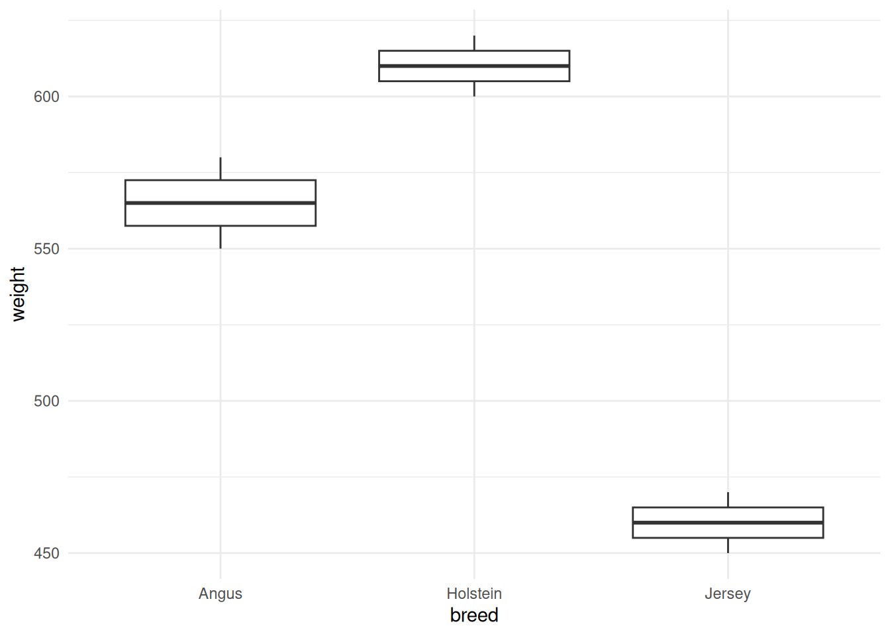
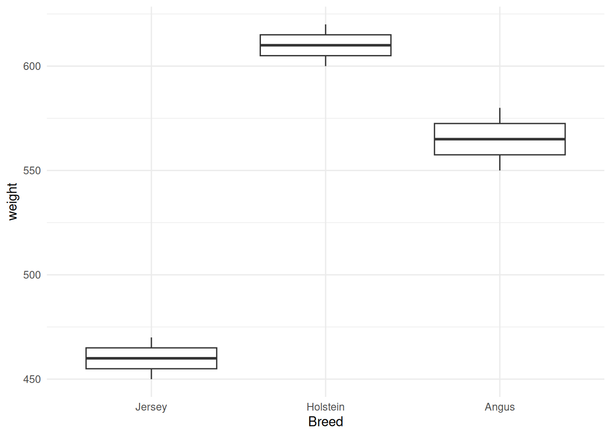

flowchart TD
A[R Data Types] --> B[Numeric<br/>Numbers with decimals]
A --> C[Integer<br/>Whole numbers]
A --> D[Character<br/>Text strings]
A --> E[Logical<br/>TRUE/FALSE]
A --> F[Factor<br/>Categorical data]
A --> G[Date/POSIXct<br/>Dates and times]
B --> B1["3.14, 500.5, -12.7"]
C --> C1["1L, 42L, 100L"]
D --> D1["'Holstein', 'A123'"]
E --> E1["TRUE, FALSE"]
F --> F1["Breed, Treatment"]
G --> G1["2024-01-15"]
3 Data Types, Strings, and Introduction to dplyr
3.1 Learning Objectives
By the end of this chapter, you will be able to:
- Identify and work with R’s core data types: numeric, integer, character, logical, factor, and date
- Check and coerce data types using functions like
class(),typeof(), andas.*()functions - Create and manipulate factors using the
forcatspackage - Perform string operations using
stringrfunctions - Understand and apply basic regular expression patterns
- Use the pipe operator (
%>%and|>) to create readable code workflows - Select columns from a dataset using
dplyr::select()and helper functions - Filter rows based on conditions using
dplyr::filter() - Combine multiple dplyr operations using pipes
- Handle missing values (
NA) when filtering data
3.2 Understanding R Data Types
Every piece of data in R has a type. Understanding data types is crucial because:
- Different operations work on different types
- Data import can misinterpret types
- Type errors cause many frustrating bugs
- Proper types enable correct statistical analysis
3.2.1 The Six Essential Data Types
3.2.2 1. Numeric (Double)
Numbers with decimal points:
# Numeric values
weight <- 450.5
temperature <- 38.6
milk_yield <- 25.3
class(weight)[1] "numeric"typeof(weight)[1] "double"3.2.3 2. Integer
Whole numbers (add L suffix):
# Integer values
n_animals <- 100L
pen_number <- 5L
class(n_animals)[1] "integer"typeof(n_animals)[1] "integer"# Most numbers are numeric by default, not integer
x <- 42
class(x) # numeric (double), not integer![1] "numeric"
NoteWhen to Use Integer vs Numeric?
Practical answer: Almost never worry about it!
- R defaults to numeric (double precision)
- Integer saves memory (rarely matters)
- Use integer for:
- Counting things (number of animals)
- IDs that are whole numbers
- Indexing
3.2.4 3. Character (Strings)
Text data, enclosed in quotes:
# Character values
animal_id <- "A1234"
breed <- "Holstein"
farm_name <- "Green Valley Farm"
class(breed)[1] "character"typeof(breed)[1] "character"# Numbers can be characters too!
id_as_string <- "12345"
class(id_as_string)[1] "character"3.2.5 4. Logical (Boolean)
TRUE or FALSE (note: all caps, no quotes):
# Logical values
is_lactating <- TRUE
has_disease <- FALSE
class(is_lactating)[1] "logical"# Logical from comparison
weight <- 500
is_heavy <- weight > 450
is_heavy[1] TRUEclass(is_heavy)[1] "logical"
TipLogical Shortcuts
TRUEcan be abbreviated asTFALSEcan be abbreviated asF- BUT: Don’t use shortcuts! Write
TRUEandFALSEfor clarity
3.2.6 5. Factor
Categorical data with defined levels:
# Create a factor
breed <- factor(c("Holstein", "Jersey", "Holstein", "Angus", "Jersey"))
breed[1] Holstein Jersey Holstein Angus Jersey
Levels: Angus Holstein Jerseyclass(breed)[1] "factor"levels(breed)[1] "Angus" "Holstein" "Jersey" When to use factors: - Categorical variables (breed, treatment, sex) - Ordered categories (small, medium, large) - Fixed set of possible values
Why factors matter: - Control order in plots and tables - Enable statistical modeling - Prevent typos (can’t add invalid levels)
3.2.7 6. Date and POSIXct
Dates and date-times:
# Date (just the date)
birth_date <- as.Date("2024-01-15")
birth_date[1] "2024-01-15"class(birth_date)[1] "Date"# POSIXct (date + time)
breeding_time <- as.POSIXct("2024-01-15 14:30:00")
breeding_time[1] "2024-01-15 14:30:00 UTC"class(breeding_time)[1] "POSIXct" "POSIXt"
ImportantDate Format: YYYY-MM-DD
Always use ISO 8601 format: Year-Month-Day (2024-01-15)
- Unambiguous internationally
- Sorts correctly
- Standard in R and databases
- Avoid: 01/15/2024 (ambiguous: US or Europe?)
3.3 Type Checking and Coercion
3.3.1 Checking Types
x <- 42.5
# What class is it?
class(x)[1] "numeric"# What is the internal type?
typeof(x)[1] "double"# Test if it's a specific type
is.numeric(x)[1] TRUEis.character(x)[1] FALSEis.logical(x)[1] FALSEis.factor(x)[1] FALSE3.3.2 Common Type-Checking Functions
| Function | Tests for |
|---|---|
is.numeric() |
Numeric (double) |
is.integer() |
Integer |
is.character() |
Character/string |
is.logical() |
Logical (TRUE/FALSE) |
is.factor() |
Factor |
is.na() |
Missing value (NA) |
3.3.3 Type Coercion
Coercion = Converting from one type to another
# Character to numeric
age_string <- "5"
age_numeric <- as.numeric(age_string)
age_numeric[1] 5class(age_numeric)[1] "numeric"# Numeric to character
weight <- 450
weight_string <- as.character(weight)
weight_string[1] "450"class(weight_string)[1] "character"# Numeric to integer
n <- 42.7
n_integer <- as.integer(n) # Truncates decimal!
n_integer[1] 42# Character to factor
treatments <- c("Control", "TreatA", "TreatB", "Control")
treatments_factor <- as.factor(treatments)
treatments_factor[1] Control TreatA TreatB Control
Levels: Control TreatA TreatB3.3.4 What Happens When Coercion Fails?
# Can't convert text to number
bad_conversion <- as.numeric("not_a_number")Warning: NAs introduced by coercionbad_conversion # NA with warning[1] NA
WarningWatch for Automatic Coercion!
R silently coerces types in some situations:
# Mixing types in a vector
mixed <- c(1, 2, "three", 4)
mixed # Everything became character![1] "1" "2" "three" "4" class(mixed)[1] "character"Rule: A vector can only hold one data type. R chooses the most flexible type that fits all values:
logical → integer → numeric → character
3.3.5 Real-World Example: Cleaning Animal IDs
library(tibble)
# Animal IDs imported as numbers (lost leading zeros!)
animals <- tibble(
animal_id = c(123, 456, 789),
weight = c(450, 525, 490)
)
animals# A tibble: 3 × 2
animal_id weight
<dbl> <dbl>
1 123 450
2 456 525
3 789 490# Should be: "0123", "0456", "0789"
# Fix by padding with zeros
animals$animal_id_fixed <- sprintf("%04d", animals$animal_id)
animals# A tibble: 3 × 3
animal_id weight animal_id_fixed
<dbl> <dbl> <chr>
1 123 450 0123
2 456 525 0456
3 789 490 0789 3.4 Working with Factors
Factors are R’s way of handling categorical data. The forcats package (part of tidyverse) makes working with factors easier.
3.4.1 Why Factors?
library(ggplot2)
# Character vector for breed
df <- data.frame(
breed = c("Holstein", "Jersey", "Angus", "Holstein", "Angus", "Jersey"),
weight = c(600, 450, 550, 620, 580, 470)
)
# Default alphabetical order
ggplot(df, aes(x = breed, y = weight)) +
geom_boxplot() +
theme_minimal()
Order: Angus, Holstein, Jersey (alphabetical)
# Use factors to control order
df$breed_factor <- factor(df$breed,
levels = c("Jersey", "Holstein", "Angus"))
ggplot(df, aes(x = breed_factor, y = weight)) +
geom_boxplot() +
labs(x = "Breed") +
theme_minimal()
Order: Jersey, Holstein, Angus (our choice!)
3.4.2 Creating Factors
# From a character vector
treatments <- c("Control", "Low", "High", "Control", "High", "Low")
# Convert to factor
treatment_factor <- factor(treatments)
treatment_factor[1] Control Low High Control High Low
Levels: Control High Low# Levels are alphabetical by default
levels(treatment_factor)[1] "Control" "High" "Low" # Specify level order
treatment_factor_ordered <- factor(treatments,
levels = c("Control", "Low", "High"))
levels(treatment_factor_ordered)[1] "Control" "Low" "High" 3.4.3 Introduction to forcats
The forcats package (“for categorical variables”) provides helpful factor functions:
library(forcats)
# Example data
df <- tibble(
treatment = c("Control", "TreatA", "TreatB", "Control", "TreatA", "TreatB"),
response = c(10, 15, 20, 12, 18, 22)
)
# Convert to factor
df$treatment <- as.factor(df$treatment)
levels(df$treatment)[1] "Control" "TreatA" "TreatB" 3.4.4 Useful forcats Functions
3.4.4.1 1. fct_relevel() - Manually reorder levels
# Put "Control" first
df$treatment <- fct_relevel(df$treatment, "Control")
levels(df$treatment)[1] "Control" "TreatA" "TreatB" 3.4.4.2 2. fct_infreq() - Order by frequency
# Most common first
df$treatment <- fct_infreq(df$treatment)
levels(df$treatment)[1] "Control" "TreatA" "TreatB" 3.4.4.3 3. fct_recode() - Rename levels
# Rename levels
df$treatment <- fct_recode(df$treatment,
"Control Group" = "Control",
"Treatment A" = "TreatA",
"Treatment B" = "TreatB"
)
levels(df$treatment)[1] "Control Group" "Treatment A" "Treatment B"
TipWhen to Use Factors
✅ Use factors for: - Categorical variables (breed, sex, treatment) - Variables with a natural order (small < medium < large) - Modeling and statistical tests - Controlling plot order
❌ Don’t use factors for: - Animal IDs (use character) - Free text (use character) - Data that might have new categories
3.5 String Manipulation with stringr
Working with text is common in data cleaning. The stringr package provides consistent, intuitive functions for string manipulation.
3.5.1 Why stringr?
All stringr functions: - Start with str_ - Take string as first argument (pipe-friendly) - Work with character vectors - Use consistent naming
3.5.2 Loading stringr
library(stringr)3.5.3 Common String Operations
3.5.3.1 1. Detecting Patterns: str_detect()
Check if a pattern exists in a string:
animal_ids <- c("H001", "J002", "H003", "A004", "H005")
# Which IDs start with "H"?
str_detect(animal_ids, "H")[1] TRUE FALSE TRUE FALSE TRUE# Filter to just Holstein (H prefix)
animal_ids[str_detect(animal_ids, "H")][1] "H001" "H003" "H005"3.5.3.2 2. Extracting Substrings: str_subset()
Get strings that match a pattern:
# Get Holstein IDs
str_subset(animal_ids, "H")[1] "H001" "H003" "H005"# Get IDs ending in 0
str_subset(animal_ids, "0")[1] "H001" "J002" "H003" "A004" "H005"3.5.3.3 3. Changing Case: str_to_lower(), str_to_upper(), str_to_title()
breeds <- c("HOLSTEIN", "jersey", "AnGuS")
str_to_lower(breeds)[1] "holstein" "jersey" "angus" str_to_upper(breeds)[1] "HOLSTEIN" "JERSEY" "ANGUS" str_to_title(breeds) # First letter capitalized[1] "Holstein" "Jersey" "Angus"
TipStandardizing Text Data
Always standardize case when cleaning data:
# Before comparing or grouping
data$breed <- str_to_title(data$breed)Prevents: “holstein” ≠ “Holstein” ≠ “HOLSTEIN”
3.5.3.4 4. Trimming Whitespace: str_trim()
Remove leading and trailing spaces:
messy_names <- c(" Holstein ", "Jersey", " Angus")
messy_names[1] " Holstein " "Jersey" " Angus" # Clean up
str_trim(messy_names)[1] "Holstein" "Jersey" "Angus" 3.5.3.5 5. Replacing: str_replace() and str_replace_all()
ids <- c("A-001", "A-002", "B-001")
# Replace first occurrence
str_replace(ids, "-", "_")[1] "A_001" "A_002" "B_001"# Replace all occurrences
text <- "the the cow cow"
str_replace(text, "the", "a") # First only[1] "a the cow cow"str_replace_all(text, "the", "a") # All[1] "a a cow cow"3.5.3.6 6. Combining Strings: str_c() (or paste())
first <- c("Animal", "Pen", "Feed")
second <- c("ID", "Number", "Type")
# Concatenate
str_c(first, second, sep = "_")[1] "Animal_ID" "Pen_Number" "Feed_Type" # Collapse into one string
str_c(first, collapse = ", ")[1] "Animal, Pen, Feed"3.5.3.7 7. Splitting Strings: str_split()
ids <- "H001,J002,A003"
# Split by comma
str_split(ids, ",")[[1]]
[1] "H001" "J002" "A003"# Returns a list! Get as character vector:
str_split(ids, ",")[[1]][1] "H001" "J002" "A003"3.5.4 Real-World Example: Cleaning Messy Farm Data
library(tibble)
# Messy data from Excel
farm_data <- tibble(
animal_id = c(" H-001", "h-002 ", "H-003"),
breed = c("HOLSTEIN", "holstein", "Holstein "),
weight_kg = c(450, 475, 460)
)
farm_data# A tibble: 3 × 3
animal_id breed weight_kg
<chr> <chr> <dbl>
1 " H-001" "HOLSTEIN" 450
2 "h-002 " "holstein" 475
3 "H-003" "Holstein " 460# Clean it up!
library(dplyr)
farm_data_clean <- farm_data %>%
mutate(
animal_id = str_trim(animal_id), # Remove whitespace
animal_id = str_to_upper(animal_id), # Uppercase
animal_id = str_replace(animal_id, "-", ""), # Remove dash
breed = str_trim(breed),
breed = str_to_title(breed)
)
farm_data_clean# A tibble: 3 × 3
animal_id breed weight_kg
<chr> <chr> <dbl>
1 H001 Holstein 450
2 H002 Holstein 475
3 H003 Holstein 4603.6 Regular Expressions Basics
Regular expressions (regex) are patterns for matching text. They’re powerful but can look cryptic.
3.6.1 Common Regex Patterns
| Pattern | Matches | Example |
|---|---|---|
. |
Any single character | "a.c" matches “abc”, “a1c”, “a_c” |
^ |
Start of string | "^H" matches “Holstein”, not “The Holstein” |
$ |
End of string | "001$" matches “H001”, not “H001A” |
[0-9] |
Any digit | "[0-9]" matches any number |
[a-z] |
Any lowercase letter | "[a-z]+" matches “abc” |
[A-Z] |
Any uppercase letter | "[A-Z]" matches “H” |
+ |
One or more | "[0-9]+" matches “123” |
* |
Zero or more | "[0-9]*" matches ““,”1”, “123” |
{n} |
Exactly n times | "[0-9]{3}" matches “123” |
| |
Or | "H|J" matches “H” or “J” |
3.6.2 Regex Examples
animal_ids <- c("H001", "J002", "H003", "A004", "H100")
# IDs starting with H
str_subset(animal_ids, "^H")[1] "H001" "H003" "H100"# IDs ending with 00-something
str_subset(animal_ids, "00.$")[1] "H001" "J002" "H003" "A004"# IDs with exactly 3 digits
str_detect(animal_ids, "[0-9]{3}")[1] TRUE TRUE TRUE TRUE TRUE# IDs starting with H or J
str_subset(animal_ids, "^(H|J)")[1] "H001" "J002" "H003" "H100"
NoteLearning Regex
Regular expressions take practice! Start simple:
- Literal matches:
"Holstein"matches “Holstein” - Simple patterns:
"^H"for starts with H - Character classes:
"[0-9]"for digits - Build gradually: Test patterns as you go
Resources: - regex101.com - Interactive regex tester - RegExr.com - Learn and test regex - stringr cheat sheet
3.6.3 Practical Example: Extracting Numbers
pen_labels <- c("Pen1", "Pen2", "Pen10", "Pen25")
# Extract the numbers
str_extract(pen_labels, "[0-9]+")[1] "1" "2" "10" "25"# Convert to numeric
as.numeric(str_extract(pen_labels, "[0-9]+"))[1] 1 2 10 253.7 Introduction to the Pipe
The pipe operator chains operations together, making code more readable.
3.7.1 What is a Pipe?
The pipe takes the output of one function and passes it as the first argument to the next function.
Two versions: - Magrittr pipe: %>% (requires magrittr or tidyverse) - Native pipe: |> (built into R 4.1+)
library(dplyr)
# Sample data
weights <- c(450, 475, 460, 490, 510, 425)
# WITHOUT pipe (nested functions, hard to read)
round(mean(weights), 1)[1] 468.3# WITH pipe (left to right, easy to read)
weights %>%
mean() %>%
round(1)[1] 468.3# Read as: "Take weights, THEN calculate mean, THEN round to 1 decimal"3.7.2 Reading Pipes
Think: “and then”
data %>%
filter(weight > 400) %>%
select(animal_id, weight) %>%
arrange(weight)Read as: - Take data - and then filter to weight > 400 - and then select animal_id and weight columns - and then arrange by weight
3.7.3 %>% vs |>
# From magrittr package (included in tidyverse)
library(dplyr)
data %>%
filter(weight > 400) %>%
summarise(mean_weight = mean(weight))- Older, more established
- Required before R 4.1
- More features (
.placeholder,%$%,%<>%)
# Built into R 4.1+
data |>
filter(weight > 400) |>
summarise(mean_weight = mean(weight))- Newer (R 4.1+)
- Slightly faster
- No extra package needed
- Simpler (fewer features)
TipWhich Pipe Should You Use?
Short answer: Either! They work the same 99% of the time.
Recommendations: - Working with tidyverse? Use %>% (consistency) - R 4.1+ and prefer native? Use |> - Teaching beginners? %>% (more examples online) - Most important: Be consistent within a project!
Keyboard shortcuts: - %>%: Cmd/Ctrl + Shift + M (customizable to |> in RStudio settings)
3.7.4 When NOT to Use Pipes
Pipes are great, but sometimes other approaches are clearer:
# ❌ Too many steps (hard to debug)
result <- data %>%
step1() %>%
step2() %>%
step3() %>%
step4() %>%
step5() %>%
step6() %>%
step7()
# ✅ Break into intermediate steps
data_filtered <- data %>%
step1() %>%
step2()
data_transformed <- data_filtered %>%
step3() %>%
step4()
result <- data_transformed %>%
step5()
# ❌ Only one step (unnecessary)
result <- data %>% mean()
# ✅ Just call the function
result <- mean(data)
# ❌ Multiple inputs (pipes work with one object)
# Pipes don't work well here
result <- merge(data1, data2, by = "id")3.8 Introduction to dplyr
dplyr is the tidyverse package for data manipulation. It provides intuitive “verbs” for working with data frames.
3.8.1 Why dplyr?
# Subsetting in base R
cattle_subset <- cattle[cattle$weight > 400 & cattle$breed == "Holstein",
c("animal_id", "weight")]Hard to read! What’s happening?
# Same operation with dplyr
cattle_subset <- cattle %>%
filter(weight > 400, breed == "Holstein") %>%
select(animal_id, weight)Clear and readable! “Filter rows, then select columns”
dplyr verbs (functions): - select(): Pick columns - filter(): Pick rows - mutate(): Create/modify columns (next chapter) - arrange(): Sort rows (next chapter) - summarise(): Calculate summaries (next chapter) - group_by(): Group for operations (next chapter)
This chapter: select() and filter()
3.8.2 Loading dplyr
library(dplyr)
# Or load entire tidyverse (includes dplyr)
library(tidyverse)3.9 Selecting Columns with select()
select() chooses which columns to keep in your dataset.
3.9.1 Basic Usage
# Create example data
cattle <- tibble(
animal_id = c("H001", "H002", "H003"),
breed = c("Holstein", "Holstein", "Jersey"),
weight_kg = c(450, 475, 460),
height_cm = c(140, 145, 135),
age_months = c(24, 30, 26)
)
cattle# A tibble: 3 × 5
animal_id breed weight_kg height_cm age_months
<chr> <chr> <dbl> <dbl> <dbl>
1 H001 Holstein 450 140 24
2 H002 Holstein 475 145 30
3 H003 Jersey 460 135 26# Select specific columns
cattle %>%
select(animal_id, weight_kg)# A tibble: 3 × 2
animal_id weight_kg
<chr> <dbl>
1 H001 450
2 H002 475
3 H003 460# Select range of columns
cattle %>%
select(animal_id:weight_kg)# A tibble: 3 × 3
animal_id breed weight_kg
<chr> <chr> <dbl>
1 H001 Holstein 450
2 H002 Holstein 475
3 H003 Jersey 460# Select all EXCEPT certain columns
cattle %>%
select(-height_cm, -age_months)# A tibble: 3 × 3
animal_id breed weight_kg
<chr> <chr> <dbl>
1 H001 Holstein 450
2 H002 Holstein 475
3 H003 Jersey 4603.9.2 Helper Functions
select() has powerful helper functions:
# Create wider dataset
animals <- tibble(
animal_id = c("001", "002", "003"),
weight_kg = c(450, 475, 460),
weight_lb = c(992, 1047, 1014),
height_cm = c(140, 145, 135),
height_in = c(55, 57, 53),
temp_c = c(38.5, 38.8, 38.3)
)
animals# A tibble: 3 × 6
animal_id weight_kg weight_lb height_cm height_in temp_c
<chr> <dbl> <dbl> <dbl> <dbl> <dbl>
1 001 450 992 140 55 38.5
2 002 475 1047 145 57 38.8
3 003 460 1014 135 53 38.3# Select columns starting with "weight"
animals %>%
select(starts_with("weight"))# A tibble: 3 × 2
weight_kg weight_lb
<dbl> <dbl>
1 450 992
2 475 1047
3 460 1014# Select columns ending with "cm"
animals %>%
select(ends_with("cm"))# A tibble: 3 × 1
height_cm
<dbl>
1 140
2 145
3 135# Select columns containing "weight"
animals %>%
select(contains("weight"))# A tibble: 3 × 2
weight_kg weight_lb
<dbl> <dbl>
1 450 992
2 475 1047
3 460 1014# Select all numeric columns
animals %>%
select(where(is.numeric))# A tibble: 3 × 5
weight_kg weight_lb height_cm height_in temp_c
<dbl> <dbl> <dbl> <dbl> <dbl>
1 450 992 140 55 38.5
2 475 1047 145 57 38.8
3 460 1014 135 53 38.33.9.3 Common select() Helpers
| Helper | Selects |
|---|---|
starts_with("x") |
Columns starting with “x” |
ends_with("x") |
Columns ending with “x” |
contains("x") |
Columns containing “x” |
matches("regex") |
Columns matching regex pattern |
num_range("x", 1:3) |
x1, x2, x3 |
where(is.numeric) |
All numeric columns |
where(is.character) |
All character columns |
everything() |
All remaining columns |
3.9.4 Reordering Columns
# Move animal_id to the end
cattle %>%
select(breed, weight_kg, height_cm, age_months, animal_id)# A tibble: 3 × 5
breed weight_kg height_cm age_months animal_id
<chr> <dbl> <dbl> <dbl> <chr>
1 Holstein 450 140 24 H001
2 Holstein 475 145 30 H002
3 Jersey 460 135 26 H003 # Or use everything() for remaining columns
cattle %>%
select(breed, everything())# A tibble: 3 × 5
breed animal_id weight_kg height_cm age_months
<chr> <chr> <dbl> <dbl> <dbl>
1 Holstein H001 450 140 24
2 Holstein H002 475 145 30
3 Jersey H003 460 135 263.9.5 Renaming While Selecting
# Rename during select
cattle %>%
select(id = animal_id, weight = weight_kg)# A tibble: 3 × 2
id weight
<chr> <dbl>
1 H001 450
2 H002 475
3 H003 460
Tip
select() Pro Tips
Use helper functions to avoid typing column names
Use
-to remove columns rather than listing many to keepUse
everything()to move columns to front:data %>% select(important_col, everything())Chain with other verbs for powerful workflows
3.10 Filtering Rows with filter()
filter() keeps rows that meet specified conditions.
3.10.1 Basic Filtering
cattle <- tibble(
animal_id = c("H001", "H002", "J001", "A001", "H003"),
breed = c("Holstein", "Holstein", "Jersey", "Angus", "Holstein"),
weight_kg = c(450, 475, 460, 520, 490),
age_months = c(24, 30, 26, 36, 28)
)
cattle# A tibble: 5 × 4
animal_id breed weight_kg age_months
<chr> <chr> <dbl> <dbl>
1 H001 Holstein 450 24
2 H002 Holstein 475 30
3 J001 Jersey 460 26
4 A001 Angus 520 36
5 H003 Holstein 490 28# Filter to heavy animals (weight > 470)
cattle %>%
filter(weight_kg > 470)# A tibble: 3 × 4
animal_id breed weight_kg age_months
<chr> <chr> <dbl> <dbl>
1 H002 Holstein 475 30
2 A001 Angus 520 36
3 H003 Holstein 490 28# Filter to Holstein breed
cattle %>%
filter(breed == "Holstein")# A tibble: 3 × 4
animal_id breed weight_kg age_months
<chr> <chr> <dbl> <dbl>
1 H001 Holstein 450 24
2 H002 Holstein 475 30
3 H003 Holstein 490 28# Filter to young animals (age < 30)
cattle %>%
filter(age_months < 30)# A tibble: 3 × 4
animal_id breed weight_kg age_months
<chr> <chr> <dbl> <dbl>
1 H001 Holstein 450 24
2 J001 Jersey 460 26
3 H003 Holstein 490 283.10.2 Comparison Operators
| Operator | Meaning | Example |
|---|---|---|
== |
Equal to | breed == "Holstein" |
!= |
Not equal to | breed != "Holstein" |
> |
Greater than | weight > 450 |
< |
Less than | age < 30 |
>= |
Greater than or equal | weight >= 450 |
<= |
Less than or equal | age <= 30 |
%in% |
In a set | breed %in% c("Holstein", "Jersey") |
WarningCommon Mistake:
= vs ==
# ❌ WRONG (assignment, not comparison)
filter(cattle, breed = "Holstein")
# ✅ CORRECT (comparison)
filter(cattle, breed == "Holstein")Remember: - = assigns a value - == tests equality
3.10.3 Combining Conditions
3.10.3.1 AND: Multiple conditions (comma or &)
# Heavy AND Holstein
cattle %>%
filter(weight_kg > 460, breed == "Holstein")# A tibble: 2 × 4
animal_id breed weight_kg age_months
<chr> <chr> <dbl> <dbl>
1 H002 Holstein 475 30
2 H003 Holstein 490 28# Same thing with &
cattle %>%
filter(weight_kg > 460 & breed == "Holstein")# A tibble: 2 × 4
animal_id breed weight_kg age_months
<chr> <chr> <dbl> <dbl>
1 H002 Holstein 475 30
2 H003 Holstein 490 283.10.3.2 OR: Either condition (|)
# Holstein OR Jersey
cattle %>%
filter(breed == "Holstein" | breed == "Jersey")# A tibble: 4 × 4
animal_id breed weight_kg age_months
<chr> <chr> <dbl> <dbl>
1 H001 Holstein 450 24
2 H002 Holstein 475 30
3 J001 Jersey 460 26
4 H003 Holstein 490 28# Better way: use %in%
cattle %>%
filter(breed %in% c("Holstein", "Jersey"))# A tibble: 4 × 4
animal_id breed weight_kg age_months
<chr> <chr> <dbl> <dbl>
1 H001 Holstein 450 24
2 H002 Holstein 475 30
3 J001 Jersey 460 26
4 H003 Holstein 490 283.10.3.3 NOT: Negate a condition (!)
# NOT Holstein
cattle %>%
filter(breed != "Holstein")# A tibble: 2 × 4
animal_id breed weight_kg age_months
<chr> <chr> <dbl> <dbl>
1 J001 Jersey 460 26
2 A001 Angus 520 36# Or
cattle %>%
filter(!breed == "Holstein")# A tibble: 2 × 4
animal_id breed weight_kg age_months
<chr> <chr> <dbl> <dbl>
1 J001 Jersey 460 26
2 A001 Angus 520 36# NOT in the set
cattle %>%
filter(!breed %in% c("Holstein", "Jersey"))# A tibble: 1 × 4
animal_id breed weight_kg age_months
<chr> <chr> <dbl> <dbl>
1 A001 Angus 520 363.10.4 Complex Logical Conditions
# (Heavy OR old) AND not Angus
cattle %>%
filter(
(weight_kg > 470 | age_months > 30),
breed != "Angus"
)# A tibble: 2 × 4
animal_id breed weight_kg age_months
<chr> <chr> <dbl> <dbl>
1 H002 Holstein 475 30
2 H003 Holstein 490 283.10.5 The %in% Operator
Match any value in a set:
# Select specific IDs
selected_ids <- c("H001", "H003", "A001")
cattle %>%
filter(animal_id %in% selected_ids)# A tibble: 3 × 4
animal_id breed weight_kg age_months
<chr> <chr> <dbl> <dbl>
1 H001 Holstein 450 24
2 A001 Angus 520 36
3 H003 Holstein 490 28# Select multiple breeds
dairy_breeds <- c("Holstein", "Jersey", "Guernsey")
cattle %>%
filter(breed %in% dairy_breeds)# A tibble: 4 × 4
animal_id breed weight_kg age_months
<chr> <chr> <dbl> <dbl>
1 H001 Holstein 450 24
2 H002 Holstein 475 30
3 J001 Jersey 460 26
4 H003 Holstein 490 283.10.6 Filtering with Strings
Use stringr functions inside filter():
# Animals with IDs starting with "H"
cattle %>%
filter(str_detect(animal_id, "^H"))# A tibble: 3 × 4
animal_id breed weight_kg age_months
<chr> <chr> <dbl> <dbl>
1 H001 Holstein 450 24
2 H002 Holstein 475 30
3 H003 Holstein 490 28# Breeds containing "Hol"
cattle %>%
filter(str_detect(breed, "Hol"))# A tibble: 3 × 4
animal_id breed weight_kg age_months
<chr> <chr> <dbl> <dbl>
1 H001 Holstein 450 24
2 H002 Holstein 475 30
3 H003 Holstein 490 283.10.7 Handling Missing Values
# Data with missing values
cattle_na <- tibble(
animal_id = c("H001", "H002", "H003", "H004"),
weight_kg = c(450, NA, 460, 490),
breed = c("Holstein", "Holstein", NA, "Jersey")
)
cattle_na# A tibble: 4 × 3
animal_id weight_kg breed
<chr> <dbl> <chr>
1 H001 450 Holstein
2 H002 NA Holstein
3 H003 460 <NA>
4 H004 490 Jersey # Filter to rows with missing weight
cattle_na %>%
filter(is.na(weight_kg))# A tibble: 1 × 3
animal_id weight_kg breed
<chr> <dbl> <chr>
1 H002 NA Holstein# Filter to rows with NON-missing weight
cattle_na %>%
filter(!is.na(weight_kg))# A tibble: 3 × 3
animal_id weight_kg breed
<chr> <dbl> <chr>
1 H001 450 Holstein
2 H003 460 <NA>
3 H004 490 Jersey # Remove all rows with ANY missing values
cattle_na %>%
filter(!is.na(weight_kg), !is.na(breed))# A tibble: 2 × 3
animal_id weight_kg breed
<chr> <dbl> <chr>
1 H001 450 Holstein
2 H004 490 Jersey # Or use drop_na() from tidyr
library(tidyr)
cattle_na %>%
drop_na() # Removes rows with any NA# A tibble: 2 × 3
animal_id weight_kg breed
<chr> <dbl> <chr>
1 H001 450 Holstein
2 H004 490 Jersey
ImportantBe Careful with
NA in Comparisons
x <- c(1, 2, NA, 4)
# This doesn't work as expected!
x == NA # Returns NA, not TRUE/FALSE[1] NA NA NA NA# Use is.na() instead
is.na(x)[1] FALSE FALSE TRUE FALSENA means “unknown”, so: - NA == NA is NA (we don’t know if two unknowns are equal) - Always use is.na() to test for missingness
3.11 Combining select() and filter() with Pipes
The real power comes from combining operations:
# Create larger dataset
farm_data <- tibble(
animal_id = c("H001", "H002", "J001", "A001", "H003", "J002"),
breed = c("Holstein", "Holstein", "Jersey", "Angus", "Holstein", "Jersey"),
weight_kg = c(450, 475, 420, 520, 490, 435),
height_cm = c(140, 145, 130, 155, 148, 132),
age_months = c(24, 30, 26, 36, 28, 25),
farm = c("North", "North", "South", "West", "North", "South"),
sex = c("F", "F", "F", "M", "F", "F")
)
farm_data# A tibble: 6 × 7
animal_id breed weight_kg height_cm age_months farm sex
<chr> <chr> <dbl> <dbl> <dbl> <chr> <chr>
1 H001 Holstein 450 140 24 North F
2 H002 Holstein 475 145 30 North F
3 J001 Jersey 420 130 26 South F
4 A001 Angus 520 155 36 West M
5 H003 Holstein 490 148 28 North F
6 J002 Jersey 435 132 25 South F # Filter Holstein cows from North farm, select ID and weight
farm_data %>%
filter(breed == "Holstein", farm == "North") %>%
select(animal_id, weight_kg)# A tibble: 3 × 2
animal_id weight_kg
<chr> <dbl>
1 H001 450
2 H002 475
3 H003 490# Young, light animals: just ID, breed, weight
farm_data %>%
filter(age_months < 28, weight_kg < 450) %>%
select(animal_id, breed, weight_kg)# A tibble: 2 × 3
animal_id breed weight_kg
<chr> <chr> <dbl>
1 J001 Jersey 420
2 J002 Jersey 435# All females, excluding height column
farm_data %>%
filter(sex == "F") %>%
select(-height_cm)# A tibble: 5 × 6
animal_id breed weight_kg age_months farm sex
<chr> <chr> <dbl> <dbl> <chr> <chr>
1 H001 Holstein 450 24 North F
2 H002 Holstein 475 30 North F
3 J001 Jersey 420 26 South F
4 H003 Holstein 490 28 North F
5 J002 Jersey 435 25 South F 3.11.1 Building Complex Workflows
# Multi-step cleaning and filtering
cleaned_data <- farm_data %>%
# Remove height (not needed)
select(-height_cm) %>%
# Only females
filter(sex == "F") %>%
# Only dairy breeds
filter(breed %in% c("Holstein", "Jersey")) %>%
# Only mature animals
filter(age_months >= 26)
cleaned_data# A tibble: 3 × 6
animal_id breed weight_kg age_months farm sex
<chr> <chr> <dbl> <dbl> <chr> <chr>
1 H002 Holstein 475 30 North F
2 J001 Jersey 420 26 South F
3 H003 Holstein 490 28 North F
TipPipe Workflow Best Practices
One operation per line for readability:
data %>% filter(condition1) %>% select(col1, col2) %>% filter(condition2)Comment complex filters:
data %>% # Remove animals that failed health check filter(health_status == "Pass") %>% # Only lactating cows filter(is_lactating == TRUE)Indent continued pipes (2 spaces):
result <- data %>% filter(condition) %>% select(columns)Save intermediate results for debugging:
filtered <- data %>% filter(condition) final <- filtered %>% select(columns)
3.12 Summary
This chapter introduced essential data manipulation skills:
- R data types include numeric, integer, character, logical, factor, and date/time
- Type checking uses
class(),typeof(),is.*()functions - Type coercion uses
as.*()functions to convert between types - Factors represent categorical data; use
forcatspackage to manipulate them - String manipulation with
stringr: detect, replace, transform, split, combine text - Regular expressions provide powerful pattern matching for text
- The pipe (
%>%or|>) chains operations for readable workflows select()chooses columns; use helper functions likestarts_with(),ends_with(),contains()filter()chooses rows based on conditions; combine conditions with&,|,!- Combining operations with pipes creates powerful data transformation workflows
Next chapter: More dplyr verbs for data transformation!
3.13 Homework Assignment
3.13.1 Assignment: Data Cleaning and Manipulation
Due: Before Week 4
3.13.1.1 Part 1: Type Exploration and Conversion (25 points)
Download the dataset messy_cattle.csv (your instructor will provide the link).
In a Quarto document:
- Read the data and examine the structure
- Check column types - are they correct?
- Fix type issues:
- Convert
animal_idto character (if needed) - Convert
breedandtreatmentto factors with appropriate levels - Convert
birth_dateto Date type - Ensure weights are numeric
- Convert
- Document the issues you found and how you fixed them
3.13.1.2 Part 2: String Cleaning (30 points)
The dataset has messy text fields. Clean them:
- Standardize
breed:- Remove leading/trailing whitespace
- Convert to title case
- Count observations per breed
- Fix
animal_id:- Make all IDs uppercase
- Remove any dashes or spaces
- Pad with leading zeros to 4 digits (e.g., “1” → “0001”)
- Create new variable
breed_code:- Extract first letter of breed name
- Examples: “Holstein” → “H”, “Jersey” → “J”
- Document your cleaning steps with before/after examples
3.13.1.3 Part 3: Filtering and Selecting (35 points)
Using your cleaned data:
- Create subset 1: Holstein and Jersey cows only
- Select columns: animal_id, breed, weight_kg, age_months
- Filter to breeds: Holstein or Jersey
- Filter to sex: Female only
- Save as
dairy_cows
- Create subset 2: Heavy, mature animals
- Filter to weight > 450 kg
- Filter to age >= 24 months
- Remove the
birth_datecolumn - Save as
mature_heavy
- Create subset 3: Treatment A recipients
- Filter to treatment == “TreatmentA”
- Select only ID, weight, and treatment columns
- Remove any rows with missing values
- Save as
treatment_a
- Answer questions:
- How many animals are in each subset?
- What is the mean weight in each subset?
- Which breed is most common in
dairy_cows?
3.13.1.4 Part 4: Reflection on Pipes and Readability (10 points)
Write 150-200 words reflecting on: - How does using pipes change your code? - Compare nested functions vs piped operations—which is clearer? - When might you NOT want to use pipes?
3.13.2 Recommended YAML
---
title: "Week 3 Homework: Data Types and dplyr"
author: "Your Name"
date: today
format:
html:
toc: true
toc-depth: 3
code-fold: false
theme: cosmo
embed-resources: true
execute:
warning: false
message: false
---3.13.3 Grading Rubric
- Part 1: Type Exploration (25%):
- Data read and structure examined (5%)
- Types checked correctly (5%)
- Type conversions performed correctly (10%)
- Issues documented clearly (5%)
- Part 2: String Cleaning (30%):
- Breed standardization (10%)
- Animal ID fixes (10%)
- Breed code creation (5%)
- Documentation and examples (5%)
- Part 3: Filtering and Selecting (35%):
- Three subsets created correctly (21%)
- Questions answered accurately (9%)
- Code is clean and well-commented (5%)
- Part 4: Reflection (10%):
- Thoughtful reflection on pipes (5%)
- Comparison of approaches (5%)
3.13.4 Bonus (10 points)
Create a complex multi-step pipeline that: 1. Starts with the raw messy data 2. Cleans all text fields 3. Converts all types 4. Filters to a specific subset 5. Selects relevant columns 6. All in ONE pipe chain with clear comments
Show before (first 5 rows of raw data) and after (final result).
3.14 Additional Resources
3.14.1 Required Reading
- R for Data Science (2e) - Chapters 13-15, 19-20: Strings, Factors, Pipes, Data Transformation
- stringr documentation
- dplyr documentation
3.14.2 Optional Reading
- forcats documentation
- Regular Expressions in R
- Wickham, H. (2014). “Tidy Data.” Journal of Statistical Software, 59(10). Link
3.14.3 Videos
- “String Manipulation in R” by StatQuest
- “Introduction to dplyr” by RStudio
- “Regular Expressions Demystified” by DataCamp
3.14.4 Cheat Sheets
3.14.5 Interactive Learning
- regex101.com - Interactive regex tester and debugger
- RegExr.com - Learn, build, and test regex
- stringr in 5 minutes - Quick start guide
3.14.6 Useful Websites
- Tidyverse - Homepage for tidyverse packages
- Stack Overflow: R - Q&A community
- RStudio Community - Friendly help forum
Next Chapter: Data Manipulation with dplyr